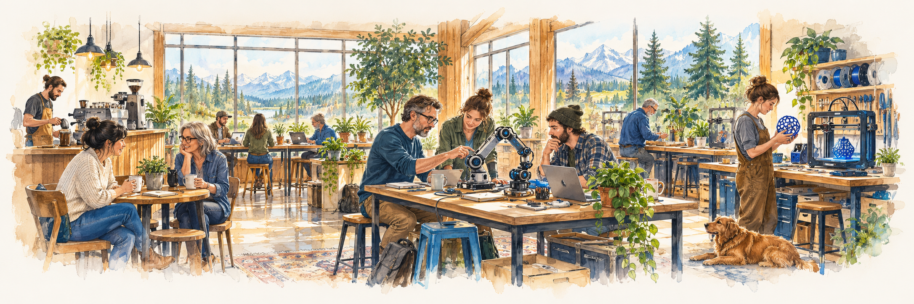

Put talent to work.
The vision is a team combining AI, software, robotics and fabrication with design, storytelling, leadership and human judgment.
A new kind of place where talented people, powerful tools and everyday problems meet. A sister brand of River Tech, developed by River Tech LLC.
Imagine a place where coffee and conversation sit alongside robotics, design, fabrication and creative work.
A business owner brings in a problem. A designer sketches an approach. Someone at the next table knows how to build it. A small conversation becomes a useful project.
Tink Town is being developed around that possibility: a place people want to spend time, and a business that helps them get things done.

The vision is a team combining AI, software, robotics and fabrication with design, storytelling, leadership and human judgment.
Coffee, conversation, shared tools and creative work. A welcoming place where people can discover what others are making.
A practical starting point for a business, household or inventor with something to improve, automate, repair or create.
Three examples of the work Tink Town is being developed to do. These are illustrative projects, not completed client case studies.
A welcoming third place where conversation, useful work and new ideas have room to meet.
The plan brings a café and small stage together with maker supplies, workspaces and a separated production workshop. A business meeting could become a prototype. An evening gathering could become a friendship.
Discover Dream BigConcept zones · not an architectural floor plan
River Tech and Tink Town share a belief in human capability. We see opportunities to connect students and graduates with practical projects, experienced people and meaningful work.
School workshops, equipment access and career pathways are possibilities we are exploring with participating school operators.
Explore the partnership visionThe first Tink Town is intended to test the model: what people need, what creates value and what makes the place worth returning to.
We are interested in conversations with business owners, skilled collaborators, potential partners and investors who see the opportunity.
Tink Town is in development. Permanent premises, an opening date and a formal hiring program are still being developed. Visit the Tink Town website to explore services and discuss a project.
We do not need every machine—or a 7,000-square-foot building—to begin. Start with useful services. Add space and equipment as the work grows.
Start at the base. Select a phase to explore.
Buy, lease or outsource according to the work—not the wish list.
The first Tink Town can be a small team helping real clients. We can build relationships and earn revenue before taking on a large lease or a full workshop.
Work from home, a small office or retail unit, client sites, or permitted shared spaces. Café meetings and bookable library rooms could support suitable conversations and workshops.
Existing computers and software first. Add a compact professional printer and finishing tools only when orders justify them. Use production partners for work beyond our equipment.
Repeat paying clients, useful workshop demand and a clear case that a small permanent space would improve delivery.
One option to explore: separately agreed use of the school after hours—for example, 2:30–5:00 p.m. This would need the school operator’s approval, a separate part-time lease or use agreement, and arrangements that fit school activities.
Estimated launch funding · 2026 USD
Launch a founder-led AI, creative and training service, with modest printing capability and three months of operating cash.
| Computers, audiovisual tools and initial software setup | $6,000 |
|---|---|
| Compact printing and finishing equipment | $5,000 |
| Business setup, insurance deposits and shared-space setup | $2,500 |
| Initial materials, launch samples and marketing | $1,500 |
| Contingency, freight and tax allowance | $3,000 |
| Setup subtotal | $18,000 |
| Three months of operating cash | $12,000 |
| Example funding total | $30,000 |
| Contract help, consumables and outsourced production | $2,000 |
|---|---|
| Software and hosting | $500 |
| Shared workspace and event rooms | $500 |
| Insurance and administration | $500 |
| Marketing, travel and miscellaneous | $500 |
| Monthly total, before customer receipts | $4,000 |
A modest public-facing home adds continuity: somewhere to meet clients, run workshops, collect orders and build a community around useful work.
A smaller retail or commercial space with room for a coffee corner, worktables, clean printing, storage and a suitable separated machine area. The layout follows the equipment we choose.
Add capability one purchase or lease at a time. Start with frequently requested print and prototype work; keep outsourcing specialist fabrication.
Reliable repeat orders, a workable operating margin and enough demand to support more equipment, specialist staff and a larger lease.
This is a working size range, not a fixed requirement. A well-arranged smaller space may work; selected machines and venue requirements determine the fit.
Estimated additional funding at this phase · 2026 USD
Open an approximately 2,000 sq ft hub with a coffee corner, worktables, upgraded print production, a small 3D-printer fleet and three months of operating cash.
| Lease deposits and light fit-out of suitable premises | $35,000 |
|---|---|
| Additional printing, finishing and 3D equipment | $30,000 |
| Coffee corner, furniture, worktables and starter stock | $20,000 |
| Move-in, professional fees and launch setup | $10,000 |
| Contingency, freight and tax allowance | $10,000 |
| Setup subtotal | $105,000 |
| Three months of operating cash | $45,000 |
| Example funding total | $150,000 |
| Rent, building charges and utilities | $5,500 |
|---|---|
| Staff, payroll costs and contract support | $6,000 |
| Software, insurance and administration | $1,500 |
| Materials and outsourced production | $2,000 |
| Monthly total, before customer receipts | $15,000 |
Grow toward the Tink Town we have been imagining: a café, creative workplace, maker shop and production workshop under one roof. Keep the earlier services and add capacity where it earns its place.
About 5,000 sq ft could accommodate a selected, compact mix. Our detailed 6,700 sq ft example shows a fuller arrangement; a wider machine range or more public space may need more room.
The full equipment list is a direction for growth, not a day-one shopping list. Larger industrial machines—including a waterjet—remain separate decisions based on demand, installation costs and safe operation.
Expand further only when customer demand and operating results support the next addition. A successful smaller Tink Town can remain smaller.
The earlier 7,500–9,000 sq ft preferred range allows more room for the fuller concept. It is not a condition for starting Tink Town.
Estimated additional funding at this phase · 2026 USD
Expand into approximately 6,000 sq ft with a café/kitchen, stage, maker retail and a selected fabrication workshop, plus three months of operating cash.
| Lease deposits, fit-out, power, extraction and separations | $130,000 |
|---|---|
| Additional fabrication, print and 3D equipment | $140,000 |
| Café/kitchen equipment, stage and furnishings | $45,000 |
| Moving, professional fees, training and added stock | $30,000 |
| Contingency, freight and tax allowance | $75,000 |
| Setup subtotal | $420,000 |
| Three months of operating cash | $180,000 |
| Example funding total | $600,000 |
| Rent, building charges and utilities | $18,000 |
|---|---|
| Staff, payroll costs and contract support | $30,000 |
| Materials, outsourced work and machine upkeep | $8,000 |
| Insurance, software and administration | $4,000 |
| Monthly total, before customer receipts | $60,000 |
Planning estimates as of October 24, 2026. The ranges are our allowances for three different scales of operation, informed by public equipment prices and local asking rents. They are not supplier or construction quotes.
Price anchors: Brother lists its MFC-L8905CDW at $769.99, an office-class starting point rather than a full print-shop press. ShopBot lists its Desktop MAX CNC from $12,548, before relevant extras and installation. Post Falls listings include asking rents around $15–$32 per sq ft per year; building charges, utilities and permitted uses vary. These examples show why installed equipment and premises budgets are larger than a machine’s advertised price.
These phases describe how we could launch and grow. Premises, services, equipment and opening dates are still being developed.